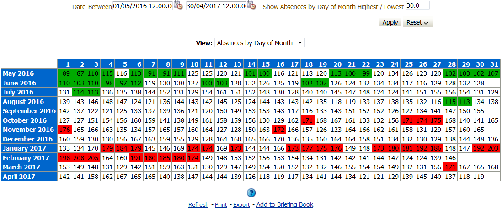
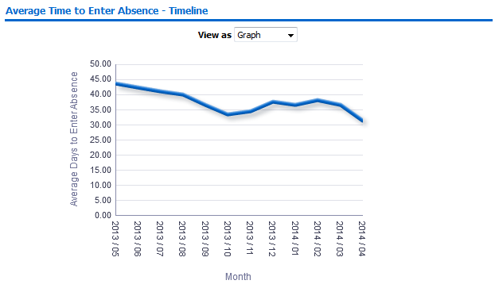
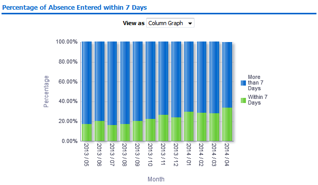
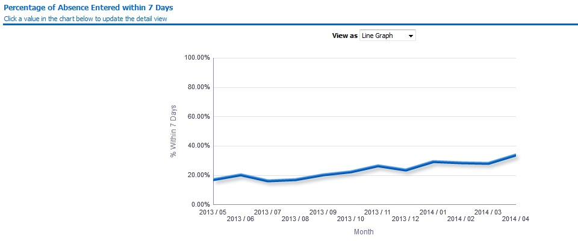
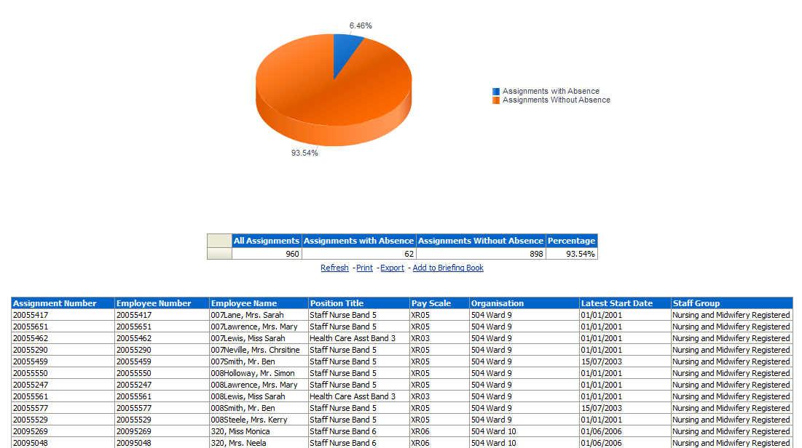
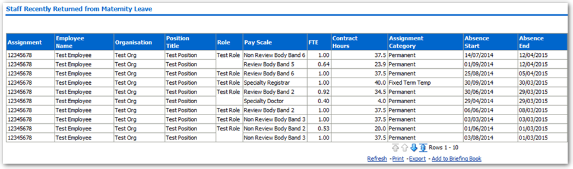
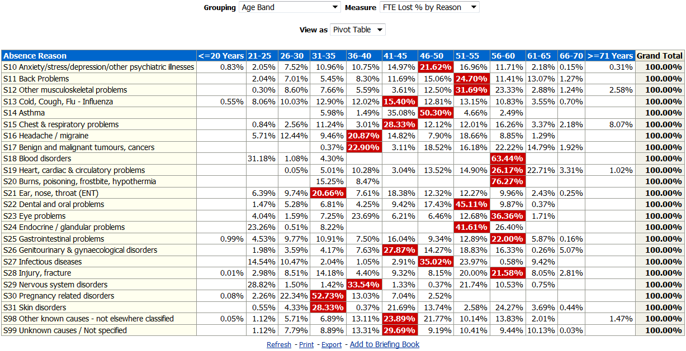
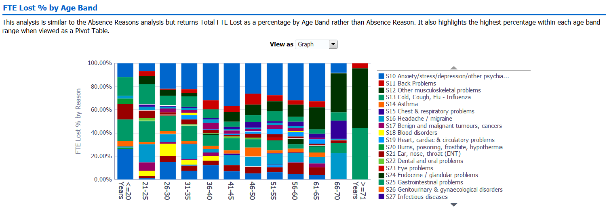
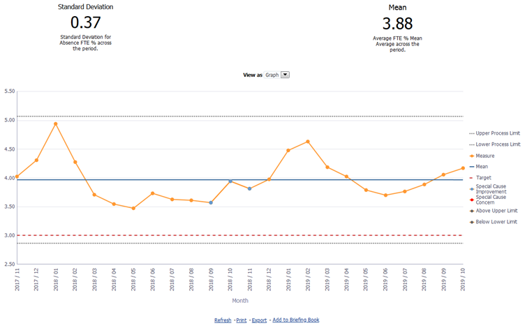

Absence Analysis Dashboard
Description
This dashboard is designed to contain analyses relating to all types of absence. Please note that on this dashboard organisation prompts will return all organisations that existed within the period to enable users to select organisations that were used in the past to enable retrospective reporting.
Allocation
This dashboard is available to the following URPs:
XXX Absence Administration
XXX Absence Management (Read Only)
XXX Administrator Self Service (Payroll Approvals Not Required)
XXX Administrator Self Service (Payroll Approvals Required)
XXX BI Administration
XXX Finance Reporting
XXX Finance Reporting and Hub Mapping
XXX HR Administration
XXX HR Administration (With RA)
XXX HR Management
XXX Manager Self Service (Payroll Approvals Not Required)
XXX Manager Self Service (Payroll Approvals Required)
XXX Supervisor Self Service
XXX Supervisor Self Service (Limited Access)
Absence Trending Tab
This tab aims to show trends of absence in the organisation. The first analysis shows the monthly absence rate (% of FTE Lost) over a number of years enabling organisations to compare absence rates and seasonal trends year to year.
Please Note: This analysis has an optional Target measure to allow users to see the year on year performance against a set target.
View Selectors:
Line Graph (Default)
Pivot Table
Example Screenshot

Absences by Day of Month
This analysis shows (by default) the previous 12 months of absence grouped by month and the day in the month in a calendar-style view. For example if an absence starts from 1st July and ends on 31st, then all the 31 cells of that month would show a '1'. The analysis also shows the number of absences occurring on each day of the week. For example, if an absence started on the first day of the week (Sunday by default) and ran for 7 days, then all the 7 cells of that week would show a ‘1’.
The analysis contains prompts for the start and end date, as well as a prompt for the user to update the number of days to be highlighted within the Absences by Day of Month view (default of 30). Please note that the Absences by Day of Week view has been designed to highlight each week's Highest (Red) and Lowest (Green) absences by default.
View Selectors:
Absences by Day of Month (default)
Absences by Day of Week
Example Screenshot

Absence Entry/End Tab
Description
This tab of the absence dashboard is designed to display a number of analyses related to Absence Entry.
Prompts
Organisation
Absence Category
Absence Type (default value of ‘Sickness’)
Absence Reason
Date From (default value of first day of month from 12 months ago)
Date To (default value of last day of Last Month)
Person Type(s) (default values 'Employee', 'Employee and Applicant')
Employee Person Type(s)
Assignment Category
Staff Group
Occupation Code
Pay Grade(s)
Assignment Status
Primary Assignments Only
Organisation Level 1-13
Interface Flag
* Target Entry/End Time (Days)
Average Time to Enter/End Absence - Timeline
Description
This analysis is designed to show the average time taken from when an absence occurred to when the absence was entered in Days by Month. By default it is set to the previous 12 months.
Data Items
| Title | Description |
|---|---|
| Time to Enter Absence | "Absence Attributes"."Absence Time to Enter" |
| Time to End Absence | "Absence Attributes"."Absence Time to End" |
| Org Level (1-13) | |
| Month |
Example Screenshot

Views
Enter – Line Graph (default)
Enter – Pivot Table
Enter – Table
End – Line Graph (default)
End – Pivot Table
End – Table
Prompts
Org Level
Actions
None
Percentage of Absence Entered/Ended Within X Days
Description
This analysis is designed to show the percentage of Absence entered and not entered within a set number of days. The number of days can be set using the available slider.
Data Items
| Title | Description |
|---|---|
| Time to Enter Absence | "Absence Attributes"."Absence Time to Enter" |
| Time to End Absence | "Absence Attributes"."Absence Time to End" |
| # Absence Occurences | |
| Percentage of Absence Occurrences | "Absence Facts"."# Absence Occurrences" / CAST(SUM("Absence Facts"."# Absence Occurrences" BY "Time"."Month") AS DOUBLE) * 100 |
| Month |
Example Screenshot

Views
Enter – Bar Graph (default)
Enter – Pivot Table
Enter – Table
Enter – Area Graph
End – Bar Graph (default)
End – Pivot Table
End – Table
End – Area Graph
Prompts
Target Entry Time (Days)
Actions
None
Percentage of Absence Entered/Ended Within X Days - Timeline
Description
This analysis is designed to show the percentage of Absence entered within a set number of days and is linked to the Absence Entry Detail analysis allowing the user to click on a value and update the Absence Entry Detail. The number of days can be set using the available slider.
Data Items
| Title | Description |
|---|---|
| Time to Enter Absence | "Absence Attributes"."Absence Time to Enter" |
| Time to End Absence | "Absence Attributes"."Absence Time to End" |
| # Absence Occurences | |
| Month |
Example Screenshot

Views
Enter – Bar Graph
Enter – Pivot Table
Enter – Table
Enter – Line Graph (default)
End – Bar Graph
End – Pivot Table
End – Table
End – Line Graph (default)
Prompts
Target Entry Time (Days)
Actions
Select a value to update detail analysis
Absence Entry/Ending Detail
Description
This analysis is designed to show the detail of each absence occurrence as selected using the Percentage of Absence Entered Within X Days analysis.
Data Items
| Title | Description |
|---|---|
| Employee Number | |
| Employee Name | |
| Absence Entered Date | |
| Absence Start Date | |
| Absence End Date | |
| Absence End Entered Date | "Absence Attributes"."Absence End Date Entered Date" |
| Days to Enter | "Absence Attributes"."Absence Time to Enter" |
| Days to End | |
| Interface Flag |
Example Screenshot

Actions
None
Absence Entry/Ending Analysis
Description
This analysis is designed to identify absences where employee pay may be affected. Absences are restricted to sickness, maternity, and unpaid leave.
Prompts
Absence Entered >=
Absence End Date Entered >=
Period End Date <=
Effective Date
Data Items
| Title | Description |
|---|---|
| Organisation | |
| Employee Name | |
| Employee Number | |
| Assignment Number | |
| Email Address | |
| Primary Assignment Flag | |
| Supervisor Name | |
| Supervisor Email Address | |
| Absence Type | |
| Absence Reason | |
| Interface Flag | |
| Absence Start Date | |
| Absence End Date | |
| Absence Entered Date | The date the absence is entered in ESR |
| Absence End Date Entered Date | The date the absence end date is entered in ESR |
| Sickness Absence Half Pay Start Date | |
| Sickness Absence Nil Pay Start Date |
Example Screenshot

Without Absence Tab
Description
This tab is designed to give the details of assignments that have not had an absence during a period. A summary graph also shows a count of assignments with and without an absence during the period.
Prompts:
Absence Type (Default: Sickness)
Absence Category (Default: All Column Values)
Absence Reason(Default: All Column Values)
Date Between (Default: Previous 12 full months)
Data Items
| Assignment Number | Organisation |
|---|---|
| Employee Number | Pay Scale |
| Employee Name | Latest Start Date |
| Position Title | Staff Group |
| Org Level 1-13 | Org Cost Centre Level 1-12 |
Example Screenshot

Maternity Tab
Description
This tab is designed to give details of staff currently on Maternity Leave and staff recently returned from Maternity Leave.
Prompts:
Days ago (Mat Returnees) (Default 90)
Staff currently on Maternity leave
Description
This analysis is designed to give a detailed view of staff currently on Maternity Leave based on an Absence Type of Maternity. It also highlights where Assignment Status has not been set to Maternity & Adoption.
Data Items
| Contract Hours | Assignment |
|---|---|
| Employee Name | Organisation |
| Position Title | Role |
| Pay Scale | FTE |
| Assignment Category | Assignment Status |
| Absence Start Date | Expected Date of Return |
| Due Date | Intends to Return |
| KIT Days | Number of KIT Days |
| Contract End Date | Primary Assignment |
| Calendar Days Taken | Days Left |
| Staff Group | Organisation Level 1-13 |
| Risk Assessment Date | Pay Step Date |
Example Screenshot

Staff Recently Returned from Maternity Leave
Description
This analysis is designed to give a detailed view of staff recently returned from Maternity Leave based on an Absence Type of Maternity.
Data Items
| Contract Hours | Assignment |
|---|---|
| Employee Name | Organisation |
| Position Title | Role |
| Pay Scale | FTE |
| Assignment Category | Number of KIT Days |
| Absence Start Date | Primary Assignment |
| Staff Group | Organisation Level 1-13 |
| Risk Assessment Date |
Example Screenshot

Reason Analysis Tab
Description
This page of the dashboard contains two analyses, both designed to show a range of absence measures by absence reason, grouped by a range of items including Age band, Job Role and Staff Group. Measures included are FTE Lost, FTE Lost %, Number of Absence Occurrences, Headcount and Assignment Count.
Reason Analysis
Description
This analysis is designed to show a range of absence measures by absence reason, grouped by Age Band, Staff Group, Job Role, Occupation Code, Long-Term/ Short-Term or Org L1-6. Measures included are FTE Lost, # Absence Occurrences, FTE Lost % by Reason, Headcount and Assignment Count.
View Selectors:
Pivot Table (Default)
Pivot Table (Including L2 Reason)
Graph
Tree-map (FTE Lost)
Action Links:
None
Data Items
| Age Band | Staff Group |
|---|---|
| Job Role | Occupation Code |
| Long Term/ Short Term | Absence Reason |
| FTE Lost | # Absence Occurrences |
| FTE Lost % by Reason | Headcount |
| Assignment Count | Organisation Level 1-8 |
Example Screenshot

FTE Lost % by Age Band
Description
This analysis is similar to the Reason analysis above, but returns Total FTE Lost as a percentage by Age Band rather than Absence Reason.
View Selectors:
Graph (Default)
Pivot Table
Data Items
| FTE Lost % by Reason | Age Band |
|---|---|
| Absence Reason |
Example Screenshot

Absence Trend by Sickness Reason(s)
Description
This analysis is designed to return a timeline of absence measures grouped by Sickness Absence Reason (S10, S98-99 by default) and based on a user defined period (3yrs by default). Users are able to plot one or more sickness reasons as required, enabling them to compare reasons against each other. Measures included are FTE Lost, # Absence Occurrences and FTE Lost % by Reason.
Prompts:
Date Between
Sickness Reason(s)
View Selectors:
Line Graph (Default)
Area Graph
Pivot Table
Action Links:
None
Data Items
| FTE Lost | # Absence Occurrences |
|---|---|
| FTE Lost % by Reason |
Example Screenshot

Headroom Analysis Tab
Description
This analysis returns total Absence FTE % for all Absence Types against a user defined Headroom figure. Results are broken down by month and a narrative is provided above the main Graph which explains the difference between the total Absence FTE % and the Headroom figure entered.
Please note that users will be prompted to enter a Headroom figure using the Headroom prompt before they can view any results.
View Selectors:
Graph (Default)
Pivot Table
Prompts:
Absence Type (Default: All Column Values)
*Headroom
Data Items
| Abence Type | Month |
|---|---|
| Absence FTE % |
Example Screenshot

Approaching Half or Nil Pay Tab
Description
This analysis returns employees approaching half or nil pay within a period selected by the user.
The ‘Cumulative Calendar Days’ column returns the number of absence days for each assignment between (start of current absence -365) and current date.
Prompts:
Organisation(s)
Staff Group(s)
Assignment Category
Employee Person Type(s)
Assignment Status
Occupation Code
Job Role(s)
Pay Grade(s)
Subjective Code(s)
Primary Assignments Only
Employee Number
* Period Start Date
* Period End Date
Data Items
| Last Name | Pay Scale |
|---|---|
| First Name | Cumulative Calendar Days |
| Title | Absence Start Date |
| Assignment Number | OSP Half Rate Start Date |
| Primary Assignment | OSP Nil Rate Start Date |
| Organisation | Days to Half Pay |
| Paypoint | Days to Nil Pay |
| Role | Organisation Level 1-13 |
Example Screenshot

Employees Approaching Half or Nil Pay (Emergency OSP Scheme)
Description
This analysis returns employees on the NHS Emergency OSP Scheme and approaching half or nil pay within a period selected by the user.
The analysis can be used to identify when the full days entitlement should be extended. Users can refer to UN3012 for further guidance.
Data Items / Example Screenshot
This analysis is a copy of the original Approaching Half or Nil Pay analysis therefore the fields and example are the same with the only difference being that this analysis is restricted to those employees on the NHS Emergency OSP Scheme.
SPC Tab
Description
The Statistical Process Control (SPC) analysis enables users to monitor and manage sickness absence.
Notes:
What does good look like? In this instance lower values are considered good.
Special Cause Improvement is defined as a trend of X (defined using the prompt) data points below the mean average OR X consecutively falling data points within the period.
Special Cause Concern is defined as a trend of X data points above the mean average OR X consecutively rising data points within the period. Only the last value of each trend is highlighted on the graph.
Any data points outside the Upper and Lower Process Limits are also highlighted. Any values falling within the range are In Control variation. Any values falling outside the range are Out of Control variation.
Standard deviation is a number used to tell how measurements for a group are spread out from the average (mean), or expected value. A low standard deviation means that most of the numbers are close to the average. A high standard deviation means that the numbers are more spread out.
Further information on SPC Reporting within the NHS can be found here.
View Selectors:
Graph (Default)
Table
Prompts:
Absence Date Between
Upper and Lower @ Sigma
No. of data points to determine Special Variation
Absence Target
Data Items
| Title | Description |
|---|---|
| Month | |
| Measure | Absence FTE % |
| Mean | Average Absence FTE % across the period |
| Target | User defined static value |
| Lower Process Limit | |
| Upper Process Limit | |
| Above Upper Limit | |
| Below Lower Limit | |
| Standard Deviation | Number used to tell how measurements for a group are spread out from the average (mean), or expected value. |
| Special Cause Concern | Defined as a trend of X data points above the mean average OR X consecutively rising data points within the period. |
| Special Cause Improvement | Defined as a trend of X (defined using the prompt) data points below the mean average OR X consecutively falling data points within the period. |
Example Screenshot
